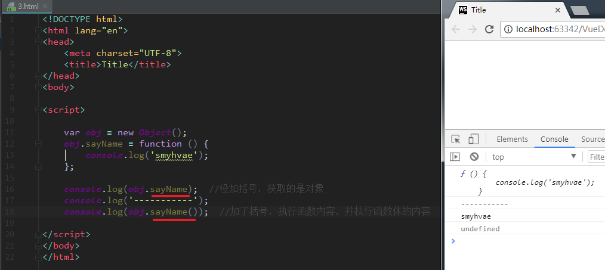

面向对象：可以创建自定义的类型，很好的支持继承和多态。
面向对象的特征：封装、继承、多态。
在 JavaScript 中，对象是一组无序的相关属性和方法的集合。
对象的作用是：封装信息。比如Student类里可以封装学生的姓名、年龄、成绩等。
对象具有特征（属性）和行为（方法）。
保存一个值时，可以使用变量，保存多个值（一组值）时，可以使用数组。
比如，如果要保存一个人的信息，通过数组的方式可以这样保存：
var arr = ['王二', 35, '男', '180'];
上面这种表达方式比较乱。而如果用JS中的对象来表达，结构会更清晰。如下：
var person = {};
person.name = '王二';
person.age = 35;
person.sex = '男';
person.height = '180';
由此可见，对象里面的属性均是键值对：
键：相当于属性名。
值：相当于属性值，可以是任意类型的值（数字类型、字符串类型、布尔类型，函数类型等）。
补充1：对象的属性值可以是任何的数据类型，也可以是个函数：（也称之为方法）
var obj = new Object();
obj.sayName = function () {
console.log('smyhvae');
};
console.log(obj.sayName); //没加括号，就是获取方法
console.log('-----------');
console.log(obj.sayName()); //加了括号，就是调用方法。即：执行函数内容，并执行函数体的内容
打印结果：

补充2：对象中的属性值，也可以是一个对象。
举例：
//创建对象 obj1 var obj1 = new Object(); obj1.test = undefined; //创建对象 obj2 var obj2 = new Object(); obj2.name = "smyhvae"; //将整个 obj2 对象，设置为 obj1 的属性 obj1.test = obj2; console.log(obj1.test.name);
打印结果为：smyhvae
基本数据类型（值类型）：String 字符串、Number 数值、Boolean 布尔值、Null 空值、Undefined 未定义。
引用数据类型（引用类型）：Object 对象。
基本数据类型：
基本数据类型的值直接保存在栈内存中，值与值之间是独立存在，修改一个变量不会影响其他的变量。
对象：
只要不是那五种基本数据类型，就全都是对象。
如果使用基本数据类型的数据，我们所创建的变量都是独立的，不能成为一个整体。
对象属于一种复合的数据类型，在对象中可以保存多个不同数据类型的属性。
对象是保存到堆内存中的，每创建一个新的对象，就会在堆内存中开辟出一个新的空间。变量保存的是对象的内存地址（对象的引用）。
换而言之，对象的值是保存在堆内存中的，而对象的引用（即变量）是保存在栈内存中的。
如果两个变量保存的是同一个对象引用，当一个通过一个变量修改属性时，另一个也会受到影响。
上面这句话很重要，我们来看看下面的例子。
代码举例：
var a = 1; var b = a;// 将 b 赋值给 a b = 2; // 修改 b 的值
上方代码中，当我修改 b 的值之后，a 的值并不会发生改变。这个大家都知道。我们继续往下看。
代码举例：
var obj1 = new Object(); obj1.name = "孙悟空"; var obj2 = obj1; // 将 obj1 的地址赋值给 obj2。从此， obj1 和 obj2 指向了同一个堆内存空间 //修改obj2的name属性 obj2.name = "猪八戒";
上面的代码中，当我修改 obj2 的name属性后，会发现，obj1 的 name 属性也会被修改。因为obj1和obj2指向的是堆内存中的同一个地址。
这个例子要尤其注意，实战开发中，很容易忽略。
对于引用类型的数据，赋值相当于地址拷贝，a、b指向了同一个堆内存地址。所以改了b，a也会变；本质上a、b就是一个东西。
如果你打算把引用类型 A 的值赋值给 B，让A和B相互不受影响的话，可以通过 Object.assign() 来复制对象。效果如下：
var obj1 = {name: '孙悟空'};
// 复制对象：把 obj1 赋值给 obj3。两者之间互不影响
var obj3 = Object.assign({}, obj1);
1.内置对象：
由ES标准中定义的对象，在任何的ES的实现中都可以使用
比如：Object、Math、Date、String、Array、Number、Boolean、Function等。
2.宿主对象：
由JS的运行环境提供的对象，目前来讲主要指由浏览器提供的对象。
比如 BOM DOM。比如console、document。
3.自定义对象：
通过 new 关键字创建出来的对象实例，都是属于对象类型，比如Object、Array、Date等。